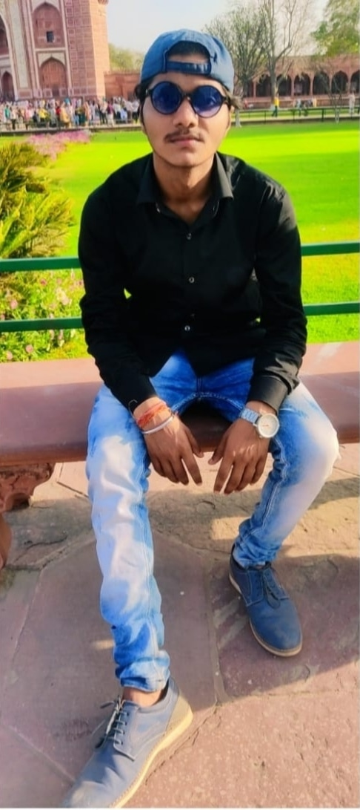

WELCOME TO ABHINAV ANAND RESUME

MAHATMA GANDHI HIGH SCHOOL
EAST LOHANIPUR, RAILWAY
HUNDER ROAD PATNA -3
email:-anandabhinav16245@gmail.com
Mobile:- +917870658561
Carrier Objective:-
To work in a challenging and dyanamic environment and to keep value adding for the organization which i will serve and represent myself to contribute to the best of my abilities.
Academic Qualification
Qualification college/school university/Board year of Passing CGPA/percentage
UG(CSE) NIET, Greater Noida AKTU 2024 9.58(sgpa 2ndsem)
7.86(sgpa 1stsem)
7.46(sgpa 3rdsem)
12th Shivam Convent CBSE 2020 68
(CBSE) Patna, Bihar
10th Patna Central school CBSE 2018 65.5
(CBSE) Patna,bihar
Technical Skills:-
Languages : Python ,java
Project:-
Project on student managemant system
Extra-curricular activities:-
- Awarded In various Hand Writing Competitions In school
- Participated in Coding Competition Held in NIET
- Volunteered the Quiz Competition in Techical festival of the college.
- Participated in Various Events in Tech-Fest of the college
- Participated in NIET Olympics(Sport Festival of the college).
- Volunteered Various Events.
Personal Assets:-
- Dedicated and Hard working
- Positive Attitude
- Continuous Learner and Willingmess To improve with Experience.
- Reliable and Disciplined.
- Self Motivated
- Result Oriented and Punctual